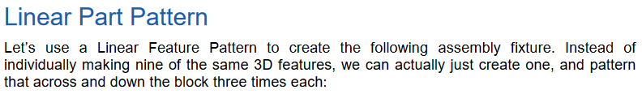
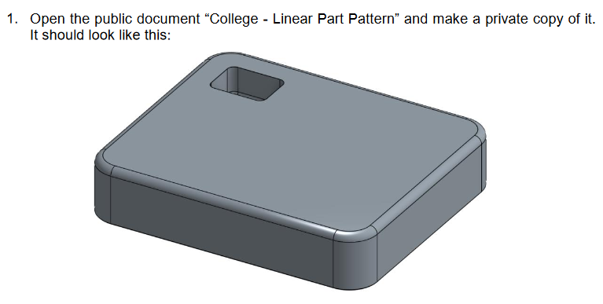
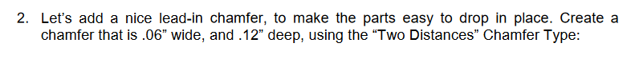
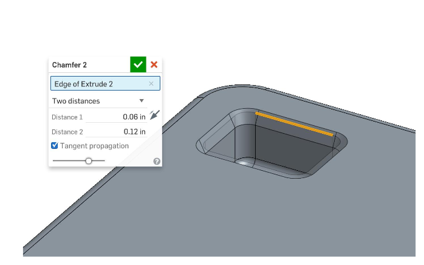
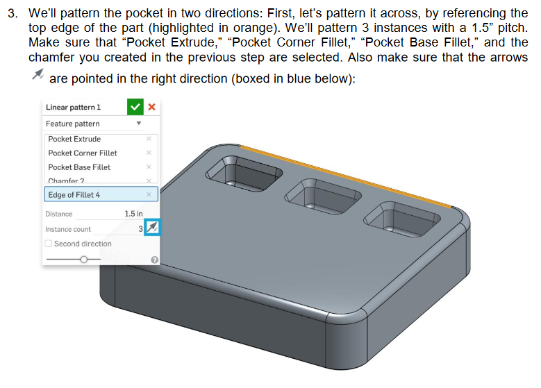
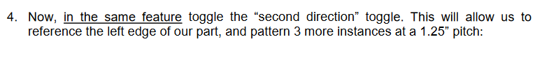
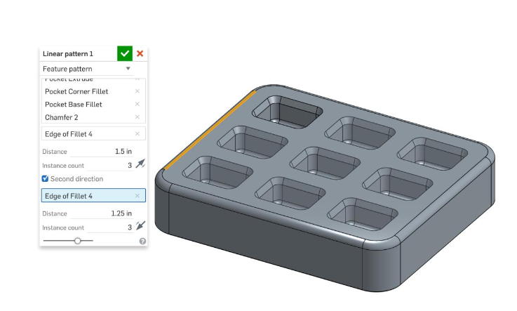
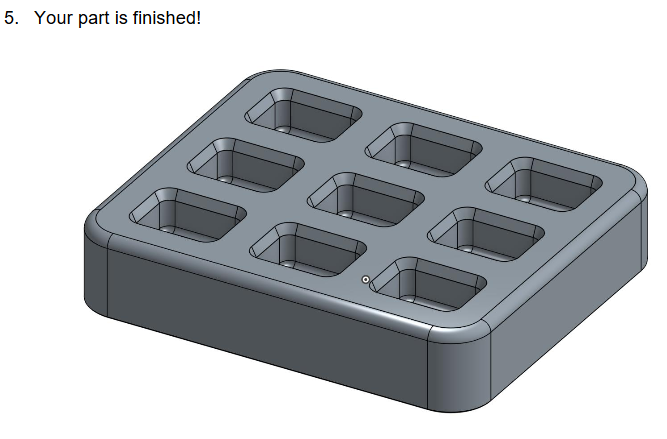

翻譯 :
讓我們使用Linear Feature Pattern來建立以下的夾持部件。不用逐一地去建立這九個3D特徵，事實上我們只需要建立一個，再利用建立的那個特徵進行橫向和向下的複製三次即可。
---------------------------------------------------------------------------------

翻譯 :
1.打開公共的文件"college-Linear Part Pattern"然後將它複製到自己的onshape。
------------------------------------------------------------------------------------


翻譯 :
新增一個導角讓東西能很輕鬆地放進那個洞裡，而導角尺寸為寬0.06，深0.12，選取"Two Distances"的導角類型。
------------------------------------------------------------------------------------

翻譯 :
我們會從兩個方向去做仿造，首先，先 做橫向的仿造，參考最上面的那個部分，我們會建立三個間隔1.5 pitch的範例。要確定"pocket extrued" "pocket corner fillet" "pocket base fillet"還有你之前所建立的導角都有被選取，另外也要確定箭頭所指的方向是正確的喔!
------------------------------------------------------------------------------------------


翻譯 :
現在，再同一個特徵裡，切換到"second direction"，這將會允許我們參考左邊這排的部件，然後建立三個間隔為1.25pitch的範例。

翻譯 :
恭喜你完成了!